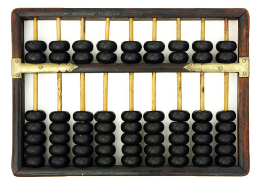

|
|
History of ComputerWhat is the History of Computer? The devices that helped to calculate have been helpers of people throughout history. With the development of trade and the large volume of sales people needed complex counting. During the time of the Babylonian Empire (2400 BC), they began to use the abacus, which is considered to be the predecessor of the computer. Blaise Pascal has developed the first addition machine to take advantage of automatic movements. When designing this machine, Pascal benefited from the movement of the gear wheel, which was turned to one side. Later, Leibniz developed another machine that is capable of performing the same multiplication process. In computing the pioneer of the electronic system is the British scientist Charles Babbage. The device, named Babbage's Analytical Engine, was able to do calculations automatically within a certain programming. In real terms, computers were developed by Kondrad Zuse in Berlin in 1941. His computer was made up of electron lamps and in the same year it was working much faster than an automatic computer made by the company Business Machines Corporation.  First Computer The first digital computer invented in today's sense is 1946. The first computer ENIAC, was developed with the support of the American Army to help the US Army calculate the best shots. The development of ENIAC, which owns a thousand times the processing power of its previous electro-mechanical devices, has kept $ 500,000 in terms of time. Today's worth of this amount is $ 6 million. ENIAC was used until October of 1955. The first trial was 1945 but in 1943 it was invented in full. The Second World War was not necessary because of the end of this period and it was introduced to the press (1947). Then ENIAC was used for 8 years (1947-1955), such as weather forecasting. ENIAC was given up on using because of EDVAC and ORDVAC since they had overwhelming features than ENIAC. On October 2, 1955, ENIAC's pieces were pulled out. at the American National Museum. The features of the first computer called ENIAC; -The first computer that operates electronically and have electronic data processing capacity. -It comes in 30 main parts. -Weight: 30 tons -Size: 167 m² -Cost: $ 500,000 Defining characteristics of some early digital computers of the 1940s (In the history of computing hardware)
| ||||